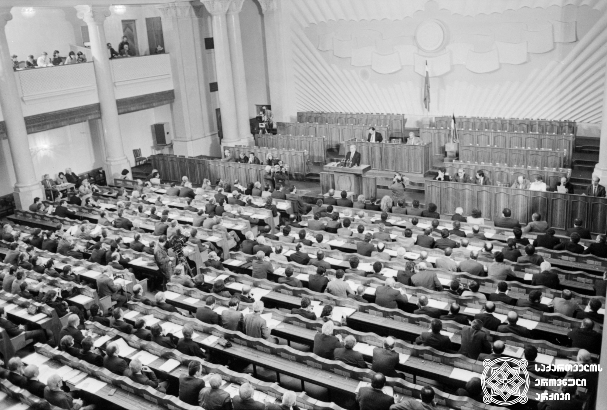
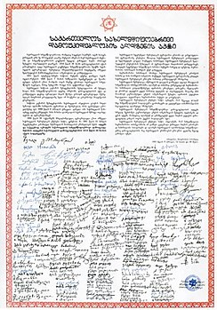
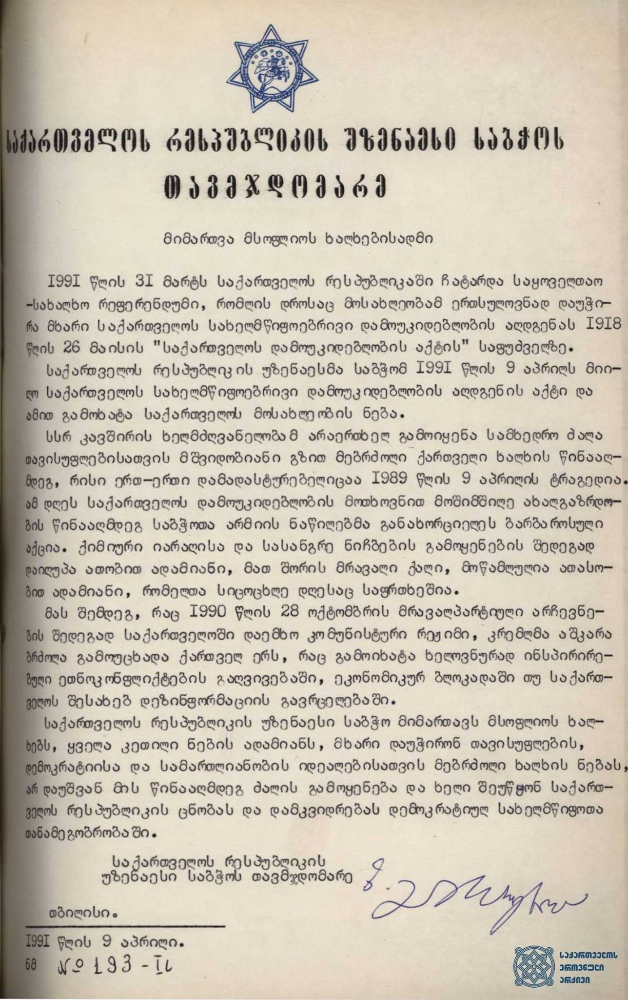

Heading
საქართველოს სახელმწიფოებრივი დამოუკიდებლობის აღდგენა — საქართველოს ეროვნული მოძრაობის საქმიანობის მთავარი მიზანი მეოცე საუკუნის 80-იან წლებში.
1991 წლის 9 აპრილს საქართველოს რესპუბლიკის უზენაესმა საბჭომ გამოაცხადა საქართველოს დამოუკიდებლობის აღდგენა, საბჭოთა კავშირიდან გასვლით, 1918 წლის 26 მაისის დამოუკიდებლობის აქტის საფუძველზე.
ფოტოზე მოცემულია საქართველოს რესპუბლიკის უზენაესი საბჭოს საგანგებო სესია, რომელზეც საქართველოს უზენაესი საბჭოს თავმჯდომარემ ზვიად გამსახურდიამ გამოაცხადა საქართველოს რესპუბლიკის დამოუკიდებლობის აღდგენა.

თბილისი, 1991 წლის 9 აპრილი.
დამოუკიდებლობის აქტის მიღება
1918 წლის 26 მაისს გოლოვინის გამზირზე, კავკასიის მეფისნაცვლის ყოფილ რეზიდენციაში, თავისი უკანასკნელი სხდომა ჩაატარა ამიეკავკასიის სეიმმა. ამიერკავკასიის დემოკრატიული ფედერაციული რესპუბლიკა დაშლილად გამოცხადდა.
იმავე დარბაზში შედგა საქართველოს ეროვნული საბჭოს სხდომა. სხდომა გაიხსნა 4 საათსა და 50 წუთზე, ნოე ჟორდანიას თავმჯდომარეობით. საქართველოს ეროვნულმა საბჭომ 5 საათსა და 10 წუთზე ერთხმად დაამტკიცა „საქართველოს დამოუკიდებლობის აქტი.

მიმართვა მსოფლიო ხალხებისადმი
„საქართველოს რესპუბლიკის უზენაესი საბჭო მიმართავს მსოფლიოს ხალხებს, ყველა კეთილი ნების ადამიანს, მხარი დაუჭირონ თავისუფლების, დემოკრატიისა და სამართლიანობის იდეალებისათვის მებრძოლი ხალხის ნებას,
არ დაუშვან მის წინააღმდეგ ძალის გამოყენება და ხელი შეუწყონ საქართველოს რესპუბლიკის ცნობას და დამკვიდრებას დემოკრატიულ სახელმწიფოთა თანამეგობრობაში“. საქართველოს რესპუბლიკის უზენაესი საბჭოს თავმჯდომარის მიმართვა მსოფლიო ხალხს.
ზვიად გამსახურდია მსოფლიო საზოგადოებრიობას ამცნობს, რომ 1991 წლის 31 მარტს საქართველოს რესპუბლიკაში ჩატარდა საყოველთაო-სახალხო რეფერენდუმი,
რომლის დროსაც მოსახლეობამ ერთსულოვნად დაუჭირა მხარი საქართველოს დამოუკიდებლობის აღიარებას 1918 წლის 26 მაისის საქართველოს დამოუკიდებლობის აქტის საფუძველზე.

თბილისი, 1991 წლის 9 აპრილი.
The End, Made by Gega Devdariani